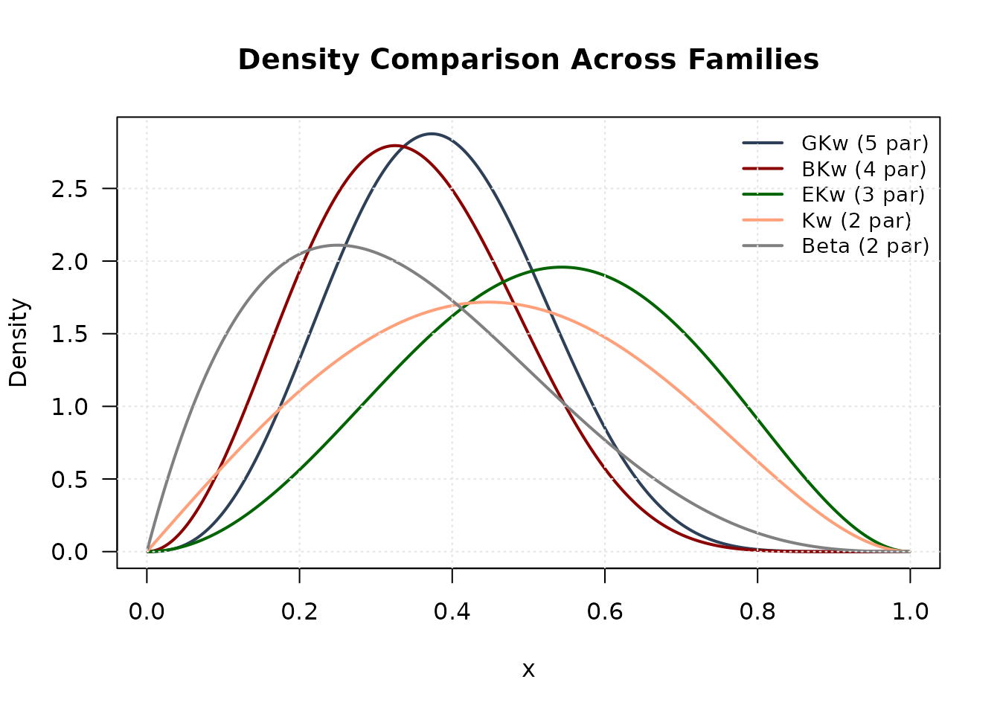

Introduction to gkwdist: Generalized Kumaraswamy Distribution Family
J. E. Lopes
2025-11-01
Source:vignettes/into-gkwdist.Rmd
into-gkwdist.RmdIntroduction
The gkwdist package provides a comprehensive implementation of the Generalized Kumaraswamy (GKw) distribution family for modeling bounded continuous data on the unit interval . All functions are implemented in C++ via RcppArmadillo, providing substantial performance improvements over pure R implementations.
Key Features
- Seven nested distributions: GKw, BKw, KKw, EKw, Mc, Kw, and Beta
- Standard distribution functions: density, CDF, quantile, and random generation
- Analytical derivatives: log-likelihood, gradient, and Hessian for efficient inference
- High performance: C++ implementation with 10-100× speedup
- No external dependencies: Uses only base R functions in examples
The Distribution Family
Mathematical Foundation
The five-parameter Generalized Kumaraswamy distribution has probability density function:
for and all parameters positive, where denotes the beta function.
Nested Sub-families
The GKw distribution generalizes several important distributions:
| Distribution | Parameters | Relationship |
|---|---|---|
| Generalized Kumaraswamy (GKw) | α, β, γ, δ, λ | Full model |
| Beta-Kumaraswamy (BKw) | α, β, γ, δ | λ = 1 |
| Kumaraswamy-Kumaraswamy (KKw) | α, β, δ, λ | γ = 1 |
| Exponentiated Kumaraswamy (EKw) | α, β, λ | γ = 1, δ = 0 |
| McDonald (Mc) | γ, δ, λ | α = β = 1 |
| Kumaraswamy (Kw) | α, β | γ = δ = λ = 1 |
| Beta | γ, δ | α = β = λ = 1 |
Basic Distribution Functions
Density, CDF, Quantile, and Random Generation
All distributions follow the standard R naming convention:
# Set parameters for Kumaraswamy distribution
alpha <- 2.5
beta <- 3.5
# Density
x <- seq(0.01, 0.99, length.out = 100)
density <- dkw(x, alpha, beta)
# CDF
cdf_values <- pkw(x, alpha, beta)
# Quantile function
probabilities <- c(0.25, 0.5, 0.75)
quantiles <- qkw(probabilities, alpha, beta)
# Random generation
set.seed(123)
random_sample <- rkw(1000, alpha, beta)Visualization
par(mfrow = c(2, 2), mar = c(4, 4, 3, 1))
# PDF
plot(x, density,
type = "l", lwd = 2, col = "#2E4057",
main = "Probability Density Function",
xlab = "x", ylab = "f(x)", las = 1
)
grid(col = "gray90")
# CDF
plot(x, cdf_values,
type = "l", lwd = 2, col = "#8B0000",
main = "Cumulative Distribution Function",
xlab = "x", ylab = "F(x)", las = 1
)
grid(col = "gray90")
# Histogram with theoretical density
hist(random_sample,
breaks = 30, probability = TRUE,
col = "lightblue", border = "white",
main = "Random Sample", xlab = "x", ylab = "Density", las = 1
)
lines(x, density, col = "#8B0000", lwd = 2)
grid(col = "gray90")
# Q-Q plot
theoretical_q <- qkw(ppoints(length(random_sample)), alpha, beta)
empirical_q <- sort(random_sample)
plot(theoretical_q, empirical_q,
pch = 19, col = rgb(0, 0, 1, 0.3),
main = "Q-Q Plot", xlab = "Theoretical Quantiles",
ylab = "Sample Quantiles", las = 1
)
abline(0, 1, col = "#8B0000", lwd = 2, lty = 2)
grid(col = "gray90")
Comparing Distribution Shapes
Flexibility Across Families
x_grid <- seq(0.001, 0.999, length.out = 500)
# Compute densities
d_gkw <- dgkw(x_grid, 2, 3, 1.5, 2, 1.2)
d_bkw <- dbkw(x_grid, 2, 3, 1.5, 2)
d_ekw <- dekw(x_grid, 2, 3, 1.5)
d_kw <- dkw(x_grid, 2, 3)
d_beta <- dbeta_(x_grid, 2, 3)
# Plot comparison
plot(x_grid, d_gkw,
type = "l", lwd = 2, col = "#2E4057",
ylim = c(0, max(d_gkw, d_bkw, d_ekw, d_kw, d_beta)),
main = "Density Comparison Across Families",
xlab = "x", ylab = "Density", las = 1
)
lines(x_grid, d_bkw, lwd = 2, col = "#8B0000")
lines(x_grid, d_ekw, lwd = 2, col = "#006400")
lines(x_grid, d_kw, lwd = 2, col = "#FFA07A")
lines(x_grid, d_beta, lwd = 2, col = "#808080")
legend("topright",
legend = c(
"GKw (5 par)", "BKw (4 par)", "EKw (3 par)",
"Kw (2 par)", "Beta (2 par)"
),
col = c("#2E4057", "#8B0000", "#006400", "#FFA07A", "#808080"),
lwd = 2, bty = "n", cex = 0.9
)
grid(col = "gray90")
Maximum Likelihood Estimation
Basic MLE Workflow
# Generate synthetic data
set.seed(2024)
n <- 1000
true_params <- c(alpha = 2.5, beta = 3.5)
data <- rkw(n, true_params[1], true_params[2])
# Maximum likelihood estimation
fit <- optim(
par = c(2, 3), # Starting values
fn = llkw, # Negative log-likelihood
gr = grkw, # Analytical gradient
data = data,
method = "BFGS",
hessian = TRUE
)
# Extract results
mle <- fit$par
names(mle) <- c("alpha", "beta")
se <- sqrt(diag(solve(fit$hessian)))Inference Results
# Construct summary table
results <- data.frame(
Parameter = c("alpha", "beta"),
True = true_params,
MLE = mle,
SE = se,
CI_Lower = mle - 1.96 * se,
CI_Upper = mle + 1.96 * se,
Coverage = (mle - 1.96 * se <= true_params) &
(true_params <= mle + 1.96 * se)
)
knitr::kable(results,
digits = 4,
caption = "Maximum Likelihood Estimates with 95% Confidence Intervals"
)| Parameter | True | MLE | SE | CI_Lower | CI_Upper | Coverage | |
|---|---|---|---|---|---|---|---|
| alpha | alpha | 2.5 | 2.5547 | 0.0816 | 2.3948 | 2.7147 | TRUE |
| beta | beta | 3.5 | 3.5681 | 0.1926 | 3.1905 | 3.9457 | TRUE |
Goodness-of-Fit Assessment
# Fitted vs true density
x_grid <- seq(0.001, 0.999, length.out = 200)
fitted_dens <- dkw(x_grid, mle[1], mle[2])
true_dens <- dkw(x_grid, true_params[1], true_params[2])
hist(data,
breaks = 40, probability = TRUE,
col = "lightgray", border = "white",
main = "Goodness-of-Fit: Kumaraswamy Distribution",
xlab = "Data", ylab = "Density", las = 1
)
lines(x_grid, fitted_dens, col = "#8B0000", lwd = 2)
lines(x_grid, true_dens, col = "#006400", lwd = 2, lty = 2)
legend("topright",
legend = c("Observed Data", "Fitted Model", "True Model"),
col = c("gray", "#8B0000", "#006400"),
lwd = c(8, 2, 2), lty = c(1, 1, 2), bty = "n"
)
grid(col = "gray90")
Model Selection
Comparing Nested Models
# Generate data from EKw distribution
set.seed(456)
n <- 1500
data_ekw <- rekw(n, alpha = 2, beta = 3, lambda = 1.5)
# Define candidate models
models <- list(
Beta = list(
fn = llbeta,
gr = grbeta,
start = c(2, 2),
npar = 2
),
Kw = list(
fn = llkw,
gr = grkw,
start = c(2, 3),
npar = 2
),
EKw = list(
fn = llekw,
gr = grekw,
start = c(2, 3, 1.5),
npar = 3
),
Mc = list(
fn = llmc,
gr = grmc,
start = c(2, 2, 1.5),
npar = 3
)
)
# Fit all models
results_list <- lapply(names(models), function(name) {
m <- models[[name]]
fit <- optim(
par = m$start,
fn = m$fn,
gr = m$gr,
data = data_ekw,
method = "BFGS"
)
loglik <- -fit$value
data.frame(
Model = name,
nPar = m$npar,
LogLik = loglik,
AIC = -2 * loglik + 2 * m$npar,
BIC = -2 * loglik + m$npar * log(n),
Converged = fit$convergence == 0
)
})
# Combine results
comparison <- do.call(rbind, results_list)
comparison <- comparison[order(comparison$AIC), ]
rownames(comparison) <- NULL
knitr::kable(comparison,
digits = 2,
caption = "Model Selection via Information Criteria"
)| Model | nPar | LogLik | AIC | BIC | Converged |
|---|---|---|---|---|---|
| Kw | 2 | 461.90 | -919.80 | -909.17 | TRUE |
| Beta | 2 | 461.54 | -919.09 | -908.46 | TRUE |
| Mc | 3 | 462.32 | -918.63 | -902.69 | TRUE |
| EKw | 3 | 462.17 | -918.35 | -902.41 | TRUE |
Interpretation
best_model <- comparison$Model[1]
cat("\nBest model by AIC:", best_model, "\n")
#>
#> Best model by AIC: Kw
cat("Best model by BIC:", comparison$Model[which.min(comparison$BIC)], "\n")
#> Best model by BIC: Kw
# Delta AIC
comparison$Delta_AIC <- comparison$AIC - min(comparison$AIC)
cat("\nΔAIC relative to best model:\n")
#>
#> ΔAIC relative to best model:
print(comparison[, c("Model", "Delta_AIC")])
#> Model Delta_AIC
#> 1 Kw 0.0000000
#> 2 Beta 0.7129854
#> 3 Mc 1.1677176
#> 4 EKw 1.4528716Advanced Topics
Profile Likelihood
Profile likelihood provides more accurate confidence intervals than Wald intervals, especially for small samples or near parameter boundaries.
# Generate data
set.seed(789)
data_profile <- rkw(500, alpha = 2.5, beta = 3.5)
# Fit model
fit_profile <- optim(
par = c(2, 3),
fn = llkw,
gr = grkw,
data = data_profile,
method = "BFGS",
hessian = TRUE
)
mle_profile <- fit_profile$par
# Compute profile likelihood for alpha
alpha_grid <- seq(mle_profile[1] - 1, mle_profile[1] + 1, length.out = 50)
alpha_grid <- alpha_grid[alpha_grid > 0]
profile_ll <- numeric(length(alpha_grid))
for (i in seq_along(alpha_grid)) {
profile_fit <- optimize(
f = function(beta) llkw(c(alpha_grid[i], beta), data_profile),
interval = c(0.1, 10),
maximum = FALSE
)
profile_ll[i] <- -profile_fit$objective
}
# Plot
par(mfrow = c(1, 2), mar = c(4, 4, 3, 1))
# Profile likelihood
chi_crit <- qchisq(0.95, df = 1)
threshold <- max(profile_ll) - chi_crit / 2
plot(alpha_grid, profile_ll,
type = "l", lwd = 2, col = "#2E4057",
main = "Profile Log-Likelihood",
xlab = expression(alpha), ylab = "Profile Log-Likelihood", las = 1
)
abline(v = mle_profile[1], col = "#8B0000", lty = 2, lwd = 2)
abline(v = 2.5, col = "#006400", lty = 2, lwd = 2)
abline(h = threshold, col = "#808080", lty = 3, lwd = 1.5)
legend("topright",
legend = c("MLE", "True", "95% CI"),
col = c("#8B0000", "#006400", "#808080"),
lty = c(2, 2, 3), lwd = 2, bty = "n", cex = 0.8
)
grid(col = "gray90")
# Wald vs Profile CI comparison
se_profile <- sqrt(diag(solve(fit_profile$hessian)))
wald_ci <- mle_profile[1] + c(-1.96, 1.96) * se_profile[1]
profile_ci <- range(alpha_grid[profile_ll >= threshold])
plot(1:2, c(mle_profile[1], mle_profile[1]),
xlim = c(0.5, 2.5),
ylim = range(c(wald_ci, profile_ci)),
pch = 19, col = "#8B0000", cex = 1.5,
main = "Confidence Interval Comparison",
xlab = "", ylab = expression(alpha), xaxt = "n", las = 1
)
axis(1, at = 1:2, labels = c("Wald", "Profile"))
# Add CIs
segments(1, wald_ci[1], 1, wald_ci[2], lwd = 3, col = "#2E4057")
segments(2, profile_ci[1], 2, profile_ci[2], lwd = 3, col = "#8B0000")
abline(h = 2.5, col = "#006400", lty = 2, lwd = 2)
legend("topright",
legend = c("MLE", "True", "Wald 95% CI", "Profile 95% CI"),
col = c("#8B0000", "#006400", "#2E4057", "#8B0000"),
pch = c(19, NA, NA, NA), lty = c(NA, 2, 1, 1),
lwd = c(NA, 2, 3, 3), bty = "n", cex = 0.8
)
grid(col = "gray90")
Confidence Regions
For multivariate inference, confidence ellipses show the joint uncertainty of parameter estimates.
# Compute variance-covariance matrix
vcov_matrix <- solve(fit_profile$hessian)
# Create confidence ellipse (95%)
theta <- seq(0, 2 * pi, length.out = 100)
chi2_val <- qchisq(0.95, df = 2)
eig_decomp <- eigen(vcov_matrix)
ellipse <- matrix(NA, nrow = 100, ncol = 2)
for (i in 1:100) {
v <- c(cos(theta[i]), sin(theta[i]))
ellipse[i, ] <- mle_profile + sqrt(chi2_val) *
(eig_decomp$vectors %*% diag(sqrt(eig_decomp$values)) %*% v)
}
# Marginal CIs
se_marg <- sqrt(diag(vcov_matrix))
ci_alpha_marg <- mle_profile[1] + c(-1.96, 1.96) * se_marg[1]
ci_beta_marg <- mle_profile[2] + c(-1.96, 1.96) * se_marg[2]
# Plot
plot(ellipse[, 1], ellipse[, 2],
type = "l", lwd = 2, col = "#2E4057",
main = "95% Joint Confidence Region",
xlab = expression(alpha), ylab = expression(beta), las = 1
)
# Add marginal CIs
abline(v = ci_alpha_marg, col = "#808080", lty = 3, lwd = 1.5)
abline(h = ci_beta_marg, col = "#808080", lty = 3, lwd = 1.5)
# Add points
points(mle_profile[1], mle_profile[2], pch = 19, col = "#8B0000", cex = 1.5)
points(2.5, 3.5, pch = 17, col = "#006400", cex = 1.5)
legend("topright",
legend = c("MLE", "True", "Joint 95% CR", "Marginal 95% CI"),
col = c("#8B0000", "#006400", "#2E4057", "#808080"),
pch = c(19, 17, NA, NA), lty = c(NA, NA, 1, 3),
lwd = c(NA, NA, 2, 1.5), bty = "n"
)
grid(col = "gray90")Performance Benchmarking
Computational Efficiency
The C++ implementation provides substantial performance gains:
# Generate large dataset
n_large <- 10000
data_large <- rkw(n_large, 2, 3)
# Compare timings
system.time({
manual_ll <- -sum(log(dkw(data_large, 2, 3)))
})
system.time({
cpp_ll <- llkw(c(2, 3), data_large)
})
# Typical results: C++ is 10-50× fasterPractical Applications
Example: Modeling Proportions
# Simulate customer conversion rates
set.seed(999)
n_customers <- 800
# Generate conversion rates from EKw distribution
conversion_rates <- rekw(n_customers, alpha = 1.8, beta = 2.5, lambda = 1.3)
# Fit model
fit_app <- optim(
par = c(1.5, 2, 1),
fn = llekw,
gr = grekw,
data = conversion_rates,
method = "BFGS",
hessian = TRUE
)
mle_app <- fit_app$par
names(mle_app) <- c("alpha", "beta", "lambda")
# Summary statistics
cat("Sample Summary:\n")
#> Sample Summary:
cat("Mean:", mean(conversion_rates), "\n")
#> Mean: 0.5039841
cat("Median:", median(conversion_rates), "\n")
#> Median: 0.5102676
cat("SD:", sd(conversion_rates), "\n\n")
#> SD: 0.2020025
cat("Model Estimates:\n")
#> Model Estimates:
print(round(mle_app, 3))
#> alpha beta lambda
#> 3.435 3.584 0.606
# Visualization
x_app <- seq(0.001, 0.999, length.out = 200)
fitted_app <- dekw(x_app, mle_app[1], mle_app[2], mle_app[3])
hist(conversion_rates,
breaks = 30, probability = TRUE,
col = "lightblue", border = "white",
main = "Customer Conversion Rates",
xlab = "Conversion Rate", ylab = "Density", las = 1
)
lines(x_app, fitted_app, col = "#8B0000", lwd = 2)
legend("topright",
legend = c("Observed", "EKw Fit"),
col = c("lightblue", "#8B0000"),
lwd = c(8, 2), bty = "n"
)
grid(col = "gray90")
Recommendations
When to Use Each Distribution
| Data Characteristics | Recommended Distribution | Parameters |
|---|---|---|
| Symmetric, unimodal | Beta | 2 |
| Asymmetric, unimodal | Kumaraswamy | 2 |
| Flexible unimodal | Exponentiated Kumaraswamy | 3 |
| Bimodal or U-shaped | Generalized Kumaraswamy | 5 |
| J-shaped (monotonic) | Kumaraswamy or Beta | 2 |
| Unknown shape | Start with Kw, test nested models | 2-5 |
Model Selection Workflow
- Exploratory Analysis: Examine histograms and summary statistics
- Start Simple: Fit Beta and Kumaraswamy (2 parameters)
- Diagnostic Checking: Use Q-Q plots and formal tests
- Progressive Complexity: Add parameters if needed (EKw → BKw → GKw)
- Information Criteria: Balance fit quality and parsimony using AIC/BIC
- Validation: Check residuals and perform cross-validation
Conclusion
The gkwdist package provides a comprehensive toolkit for modeling bounded continuous data. Key advantages include:
- Flexibility: Seven nested distributions accommodate diverse data shapes
- Efficiency: C++ implementation ensures fast computation
- Completeness: Full suite of distribution and inference functions
- Reliability: Analytical derivatives guarantee numerical accuracy
Further Reading
For theoretical details and applications, see:
- Carrasco, J. M. F., Ferrari, S. L. P., and Cordeiro, G. M. (2010). “A new generalized Kumaraswamy distribution.” arXiv:1004.0911.
- Jones, M. C. (2009). “Kumaraswamy’s distribution: A beta-type distribution with some tractability advantages.” Statistical Methodology, 6(1), 70-81.
- Kumaraswamy, P. (1980). “A generalized probability density function for double-bounded random processes.” Journal of Hydrology, 46(1-2), 79-88.
Session Information
sessionInfo()
#> R version 4.5.2 (2025-10-31)
#> Platform: x86_64-pc-linux-gnu
#> Running under: Ubuntu 24.04.3 LTS
#>
#> Matrix products: default
#> BLAS: /usr/lib/x86_64-linux-gnu/openblas-pthread/libblas.so.3
#> LAPACK: /usr/lib/x86_64-linux-gnu/openblas-pthread/libopenblasp-r0.3.26.so; LAPACK version 3.12.0
#>
#> locale:
#> [1] LC_CTYPE=C.UTF-8 LC_NUMERIC=C LC_TIME=C.UTF-8
#> [4] LC_COLLATE=C.UTF-8 LC_MONETARY=C.UTF-8 LC_MESSAGES=C.UTF-8
#> [7] LC_PAPER=C.UTF-8 LC_NAME=C LC_ADDRESS=C
#> [10] LC_TELEPHONE=C LC_MEASUREMENT=C.UTF-8 LC_IDENTIFICATION=C
#>
#> time zone: UTC
#> tzcode source: system (glibc)
#>
#> attached base packages:
#> [1] stats graphics grDevices utils datasets methods base
#>
#> other attached packages:
#> [1] gkwdist_1.0.5
#>
#> loaded via a namespace (and not attached):
#> [1] digest_0.6.37 desc_1.4.3 R6_2.6.1
#> [4] numDeriv_2016.8-1.1 RcppArmadillo_15.0.2-2 fastmap_1.2.0
#> [7] xfun_0.54 magrittr_2.0.4 cachem_1.1.0
#> [10] knitr_1.50 htmltools_0.5.8.1 rmarkdown_2.30
#> [13] lifecycle_1.0.4 cli_3.6.5 pkgdown_2.1.3
#> [16] sass_0.4.10 textshaping_1.0.4 jquerylib_0.1.4
#> [19] systemfonts_1.3.1 compiler_4.5.2 tools_4.5.2
#> [22] ragg_1.5.0 evaluate_1.0.5 bslib_0.9.0
#> [25] Rcpp_1.1.0 yaml_2.3.10 jsonlite_2.0.0
#> [28] rlang_1.1.6 fs_1.6.6